Pituba
Av. Manoel Dias da Silva, 1783 — Pituba, Salvador – BA
Seg. a sex. 8:00 – 19:00 · Sáb. 8:00 – 13:00
Agende agora sua consulta
Implantes dentários com planejamento individualizado e a estrutura de um Hospital Odontológico.
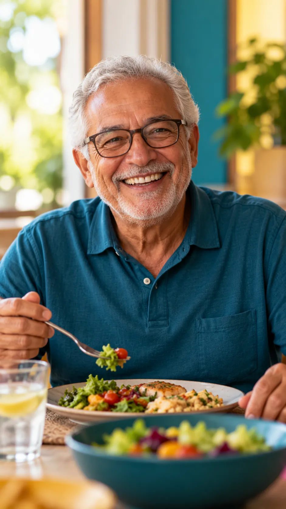
Talvez você se reconheça aqui
Você escolhe o que consegue comerem vez daquilo que realmente gostaria.
Começa a mastigar só de um ladoe isso vira parte da rotina.
Sorri menos nas fotografiasou procura automaticamente esconder a boca.
Fica atento à prótesedurante uma conversa, refeição ou encontro.
Recusa alguns alimentospor medo de sentir dor ou desconforto.
Adia o tratamentoporque pensar em cirurgia gera ansiedade.
O que você quer de volta
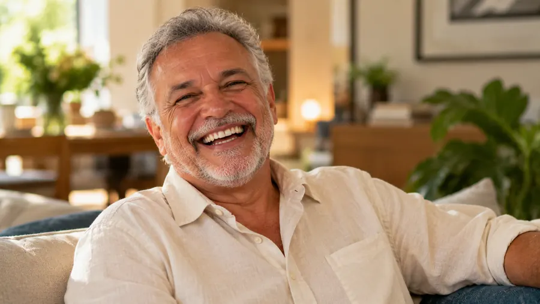
Pedir carne, comida japonesa ou aquilo que você gosta sem começar calculando se conseguirá mastigar.
Sem pensar imediatamente em esconder a boca.
Em uma reunião, entrevista, encontro ou almoço em família.
Sem procurar o melhor jeito de esconder o sorriso.
Sem ficar preocupado se uma prótese vai se mover.
Recuperando função mastigatória e buscando uma condição bucal adequada.
Segurança HOE
Faça seu tratamento com a segurança de um Hospital Odontológico.
Principalmente em tratamentos mais complexos, sentir confiança na estrutura, na equipe e no planejamento pode fazer tanta diferença quanto conhecer o procedimento.
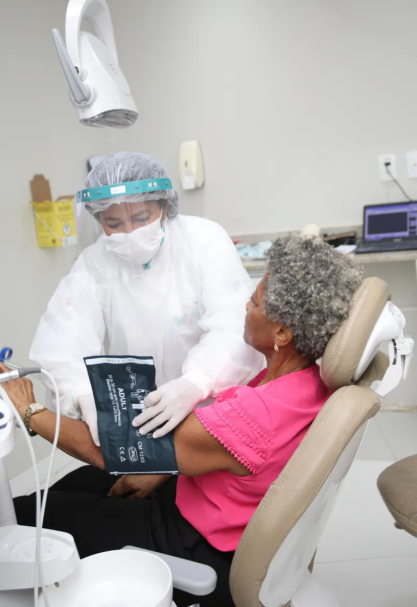
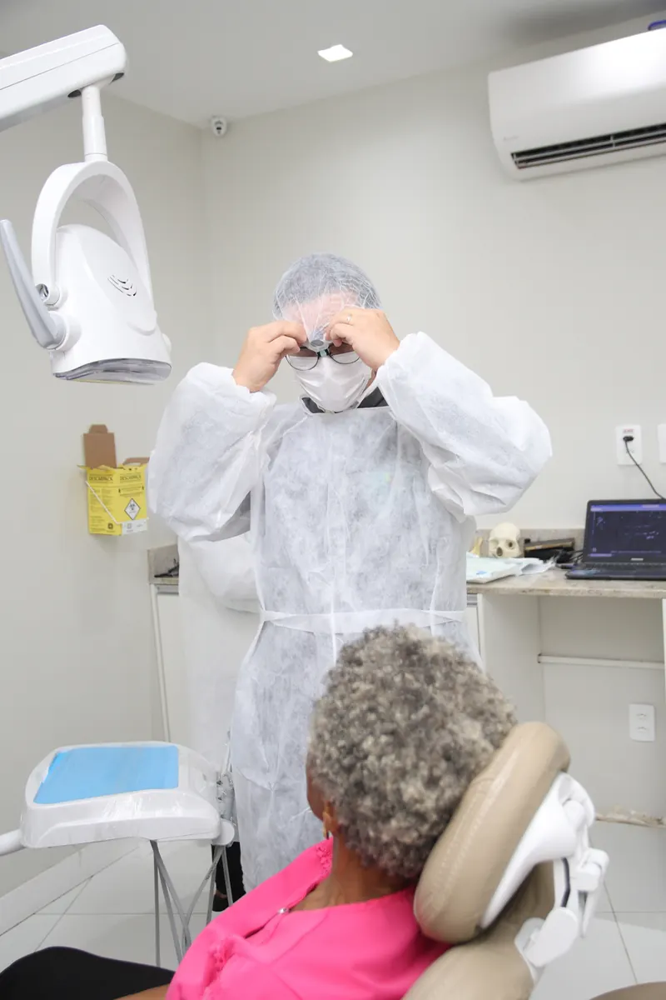
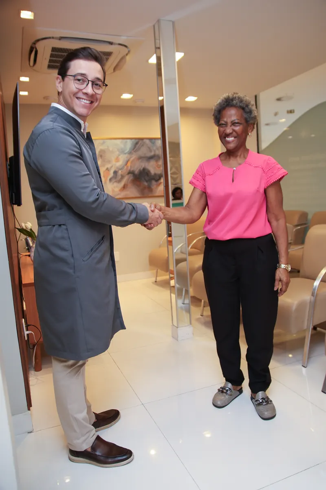
Estrutura, equipe e cuidado
Tratamentos complexos merecem uma estrutura preparada. No HOE, estrutura, equipe e cuidado estão no mesmo lugar.
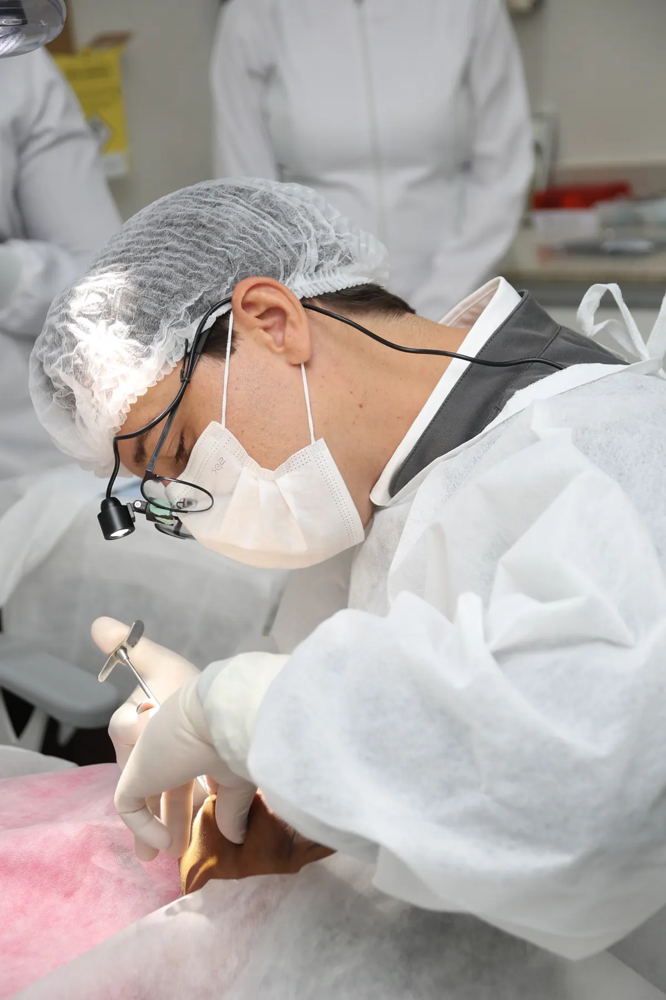
Estrutura destinada à realização de procedimentos odontológicos dentro do ambiente HOE.
Diferentes profissionais podem participar do planejamento conforme a necessidade do caso.
Cada caso precisa ser estudado antes da definição do tratamento.
Recursos tecnológicos auxiliam avaliação e planejamento, ajudando a equipe a estudar detalhes do caso antes do procedimento.
Existem possibilidades destinadas a pacientes ansiosos ou em tratamentos específicos, conforme indicação.
Orientação antes, durante e depois das etapas do tratamento.
Segurança não começa quando a cirurgia começa. Começa quando o caso é estudado.
Se você tem medo, fale sobre isso
Muitos pacientes chegam após anos adiando atendimento por:
O medo precisa ser compreendido e considerado durante o planejamento.
AGENDE SUA CONSULTA AGORAImplante com sedação em Salvador
O HOE dispõe de possibilidades de sedação para pacientes ansiosos ou em tratamentos específicos. A indicação é individual e considera:
A sedação não é indicada para todos os casos, e cada tipo tem efeitos diferentes. Quando indicada, é realizada com estrutura e acompanhamento apropriados, dentro do ambiente de Hospital Odontológico.
AGENDE SUA CONSULTA AGORAExperiência que ajuda a construir confiança
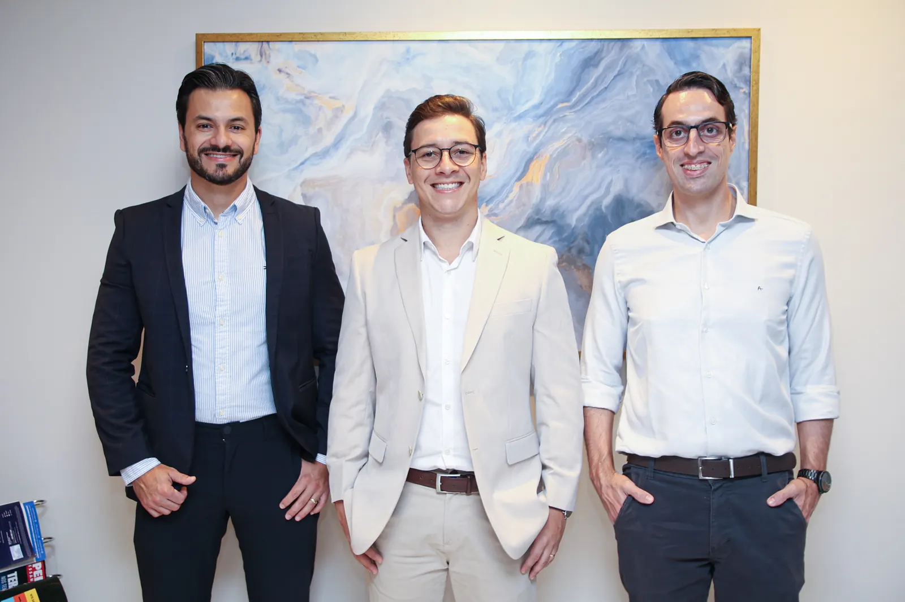
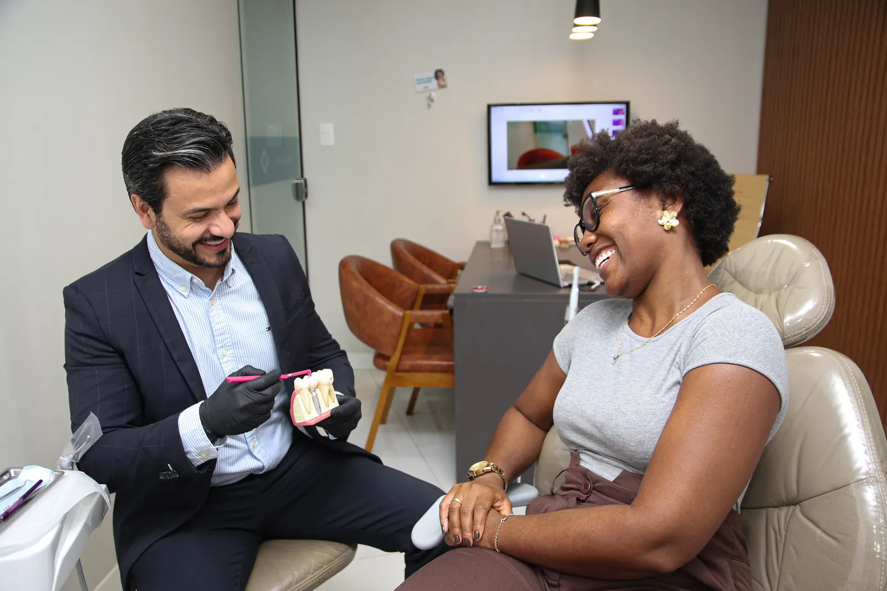
Antes de qualquer procedimento existe uma pessoa com dúvidas, receios, expectativas e uma história. Por isso o atendimento deve começar ouvindo.
Como o tratamento começa
Depoimentos
Veja onde seu tratamento acontece
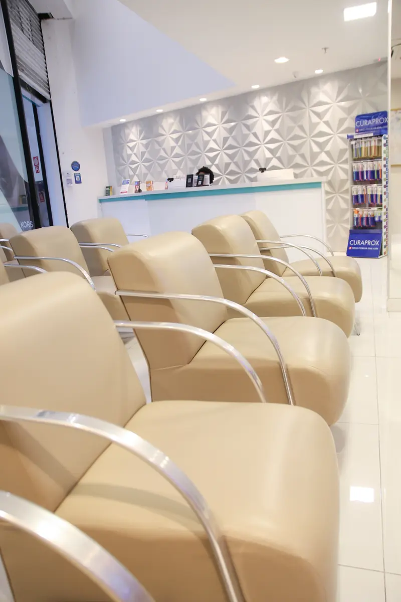
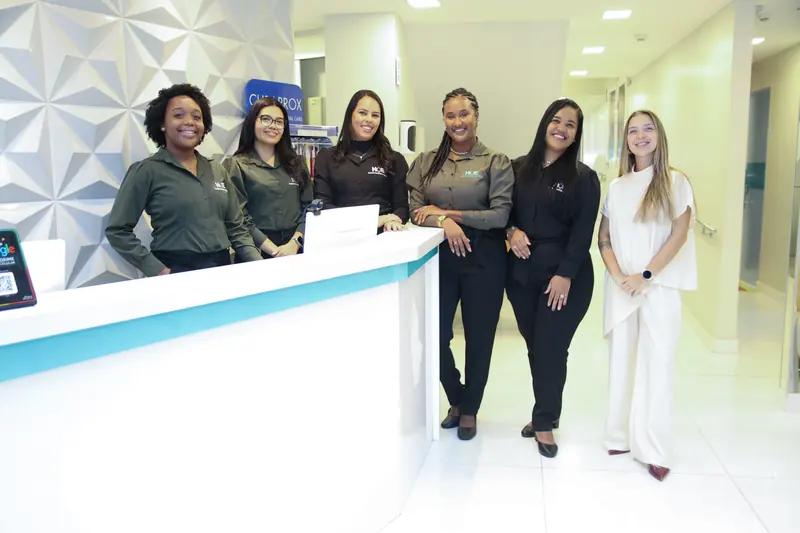
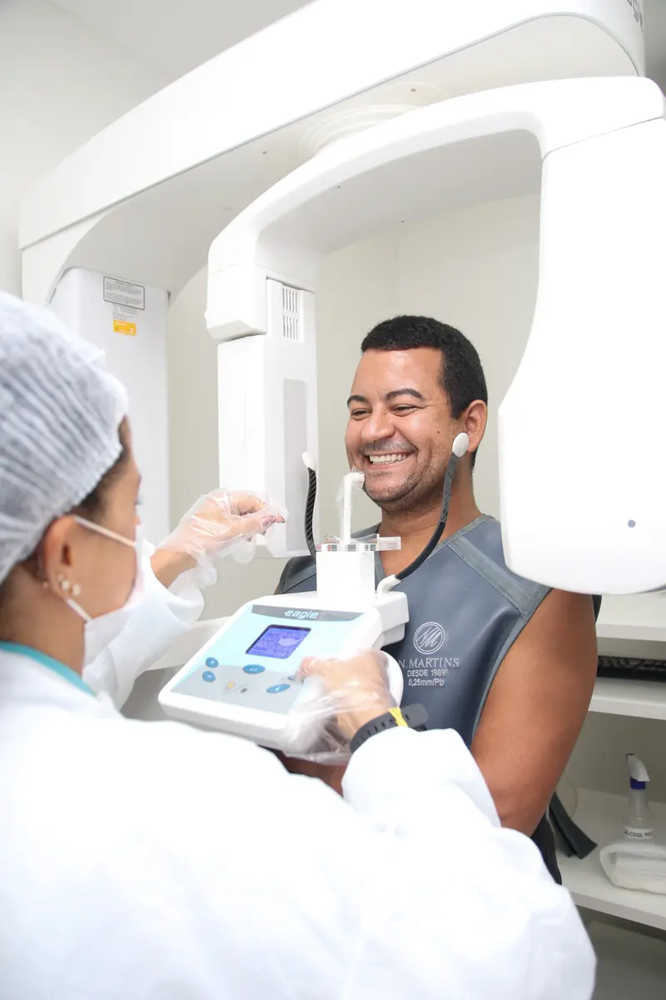
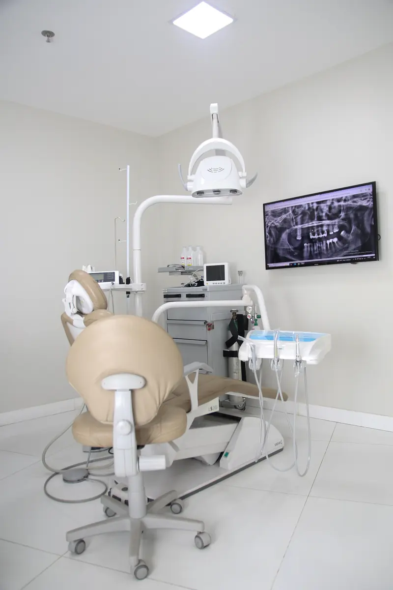
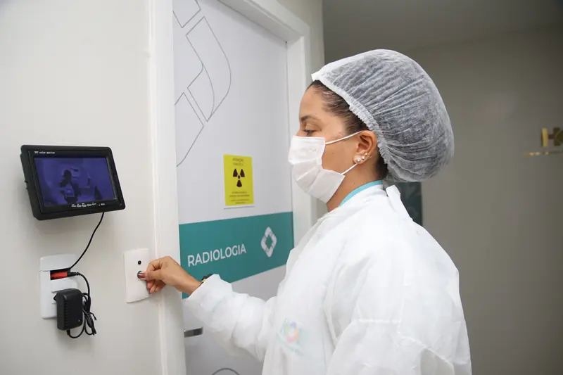
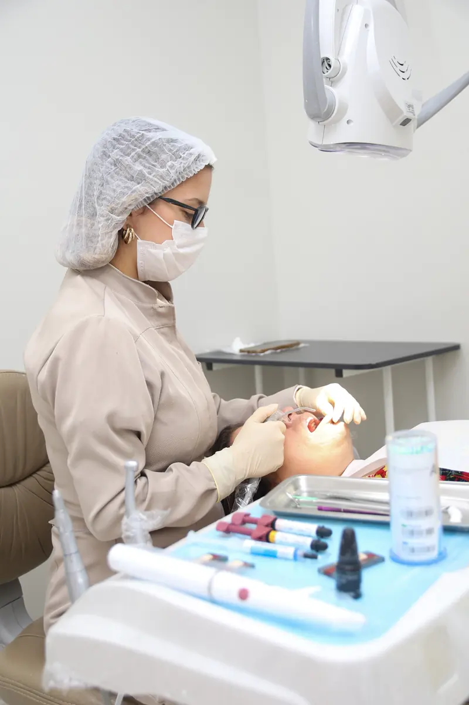
Uma dúvida muito comum
A resposta sincera é que o valor muda de um caso para outro. Ele depende de fatores como:
Dois pacientes que dizem “preciso de um implante” podem precisar de tratamentos completamente diferentes. A avaliação permite entender o caso antes de definir investimento e etapas.
AGENDE SUA CONSULTA AGORAEstrutura
Cuidado
Experiência
Dúvidas frequentes
Não encontrou sua dúvida?
Gostaria de mais informaçõesO procedimento é realizado com anestesia, e o desconforto dos dias seguintes costuma ser controlado com as orientações e medicações indicadas pela equipe. A percepção varia de pessoa para pessoa, por isso vale conversar sobre seus receios na avaliação. Para pacientes ansiosos, pode existir a possibilidade de sedação, conforme indicação.
Muitas pessoas que perderam um ou mais dentes podem ser candidatas, mas a indicação depende de avaliação clínica, exames e das condições de saúde bucal e geral de cada paciente.
Em muitos casos, sim. Implantes podem ajudar a estabilizar uma prótese ou servir de base para uma prótese fixa. Quais alternativas existem para você é algo definido na avaliação.
O HOE dispõe de possibilidades de sedação. A indicação considera sua condição clínica, o tipo de procedimento e a avaliação profissional, e é realizada com estrutura e acompanhamento apropriados.
O valor depende da quantidade de dentes, da condição óssea, do tipo de prótese ou reabilitação, dos exames e de eventuais procedimentos adicionais. Por isso, o investimento é apresentado depois da avaliação e do planejamento do seu caso.
Depende do caso. O tratamento costuma envolver avaliação, planejamento, cirurgia, um período de cicatrização e a confecção da prótese. O cronograma previsto para você é explicado durante o planejamento.
A idade, isoladamente, não costuma ser o fator decisivo. O que orienta a indicação são as condições de saúde geral e bucal, avaliadas individualmente pela equipe.
Em alguns casos, procedimentos complementares, como enxertos, podem ser considerados. Se são possíveis ou necessários, só é possível saber com exames e planejamento.
Sim. Exames de imagem e, quando necessário, exames complementares ajudam a equipe a estudar o caso e planejar as etapas com mais segurança.
Sim. O HOE é um Hospital Odontológico com centro cirúrgico próprio, destinado à realização de procedimentos odontológicos dentro do ambiente HOE.
Vale procurar um lugar que ofereça avaliação cuidadosa, planejamento, estrutura adequada e acompanhamento. O HOE reúne estrutura de Hospital Odontológico, centro cirúrgico e equipe multidisciplinar em duas unidades em Salvador.
O HOE possui duas unidades em Salvador, Bahia: Pituba e Shopping Paralela. [Endereços completos a serem inseridos.]
[RESPOSTA A CONFIRMAR PELO HOE.] Para saber quais convênios e formas de pagamento se aplicam ao seu tratamento, fale com nossa equipe pelo WhatsApp.
Unidades HOE
Av. Manoel Dias da Silva, 1783 — Pituba, Salvador – BA
Seg. a sex. 8:00 – 19:00 · Sáb. 8:00 – 13:00
Av. Luís Viana Filho, 8544 — Salvador – BA
Seg. a sex. 8:00 – 19:00 · Sáb. 8:00 – 13:00